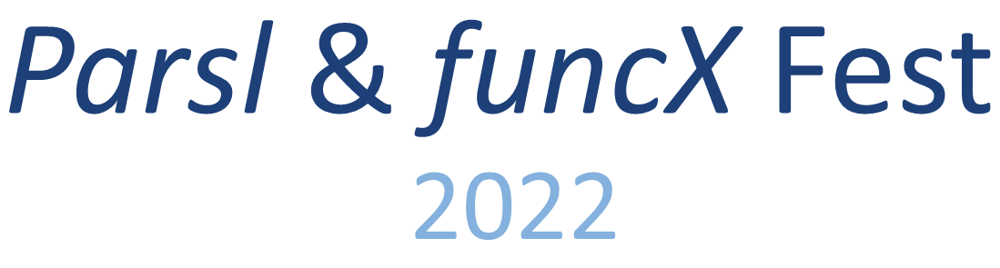

Join us for the second Parsl & funcXFest Community Meeting. The meeting will be held as a hybrid meeting on September 13-14, 2022. The in-person component will be held at the University of Chicago.
The meeting will bring together researchers, developers, and cyberinfrastructure experts from around the world to discuss experiences using and developing funcX and Parsl. Parsl is a parallel programming library and underpins funcX's endpoint software.
Registration (free): https://forms.gle/TEeuGPo4MwHNZML79. We invite lightning talks from the community and would love to hear about your recent work.
We have limited travel support available to attend the workshop. Please contact Kyle Chard (chard@uchicago.edu) for information.
Parsl & funcXFest 2021 page had over 100 registrations and the program included 29 presentations spanning a range of science and CI areas. Slides and videos are online.